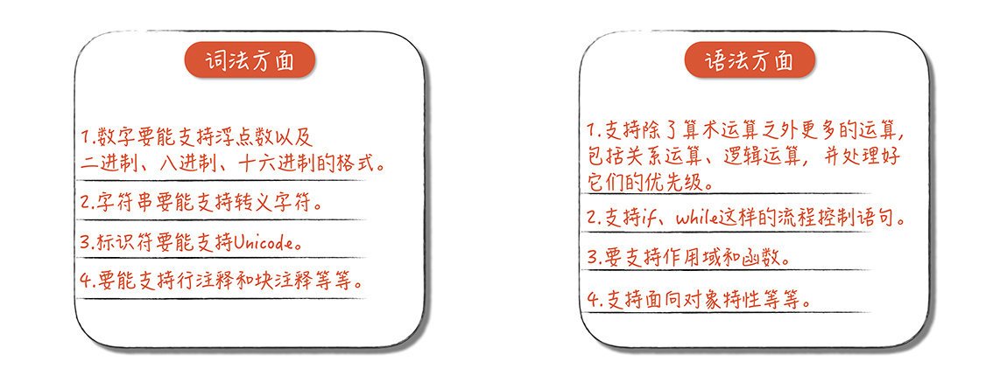
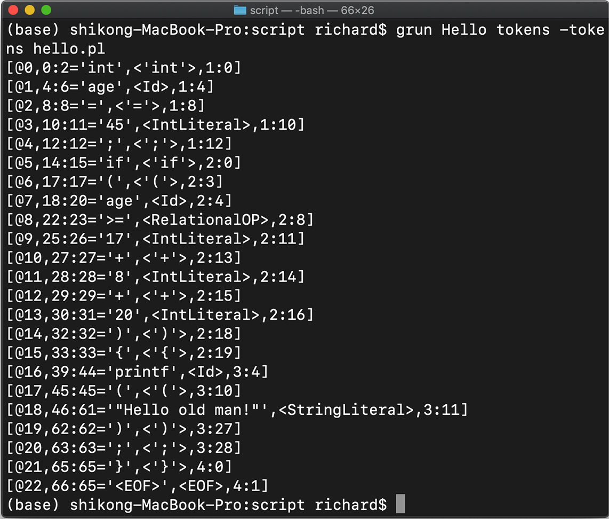
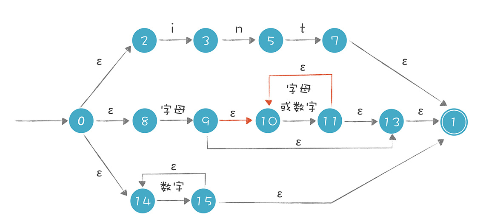
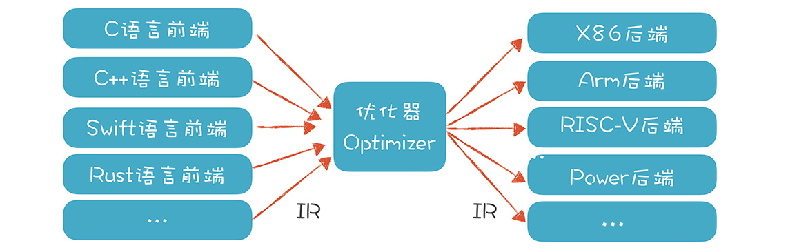
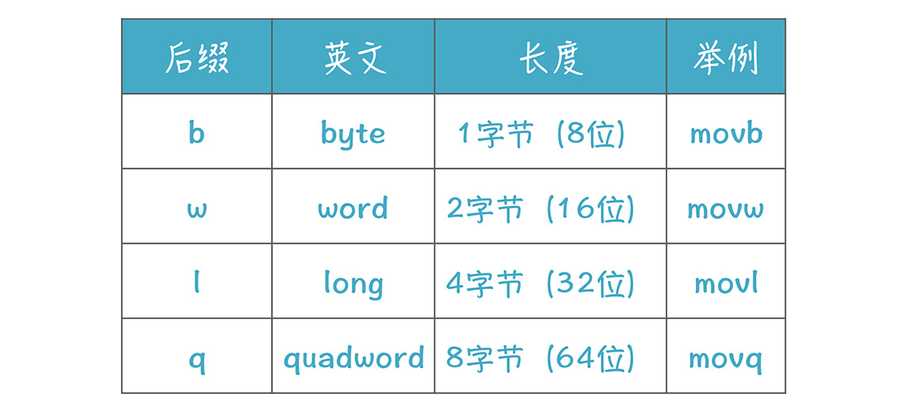

目录
051编译原理¶
工具¶
编译器前端工具:
词法分析: Lex（或其 GNU 版本，Flex）
语法分析: Yacc（或 GNU 的版本，Bison）、Antlr、JavaCC
Antlr
1. 有限自动机是比较简单的一种自动机，对应于正则文法，也叫做 3 型文法
又叫做线性文法（Linear Grammar）。
它的特点是产生式的右边部分最多只有一个非终结符，
比如 X->aYb，其中 a 和 b 是终结符
2. 比它强大的是下推自动机，对应于上下文无关文法，也叫做 2 型文法
区别: 上下文无关文法允许递归调用，而正则文法不允许
上下文相关的情况: 不是语法分析阶段负责的，而是放在语义分析阶段来处理的
3. 比它更强大的是线性有界自动机，对应于上下文相关文法，也叫 1 型文法
4. 图灵机的范围比它们都大，它对应 0 型文法。你任何能用产生式写出来的文法规则，都属于 0 型文法
LLVM 的文档里有一个小的教程，做了一个完整的前端: https://llvm.org/docs/tutorial/MyFirstLanguageFrontend/index.html
脚本语言playscript: https://github.com/xiaomiwujiecao/playscript-java
Anluin’s Learning Algorithm
语法分析的原理
递归下降算法（Recursive Descent Parsing）
上下文无关文法（Context-free Grammar，CFG
语法和文法有什么区别:
1. 文法，英文叫做Grammar，是形式语言（Formal Language）的一个术语
正则文法(Regular Grammar)、上下文无关文法(Context-free Grammar)等，用来描述词法和语法
2. 语法，英文是Syntax，主要是描述词是怎么组成句子的
一个语言的语法规则，通常指的是这个Syntax
递归下降:
采用递归下降算法，总是采用深度优先的策略，先解析最左子节点，然后解析最左子节点的最左子节点。
等着这棵子树完全构建完毕了，再构建第二棵子树。
会导致两个问题，一个是“回溯”，一个是不能处理左递归文法。
词法分析, 语法分析¶

一个完善的编译程序在词法方面以及语法方面的工作¶
antlr命令¶
Hello.g4:
lexer grammar Hello; //lexer关键字意味着这是一个词法规则文件，名称是Hello，要与文件名相同
//关键字
If : 'if';
Int : 'int';
//字面量
IntLiteral: [0-9]+;
StringLiteral: '"' .*? '"' ; //字符串字面量
//操作符
AssignmentOP: '=' ;
RelationalOP: '>'|'>='|'<' |'<=' ;
Star: '*';
Plus: '+';
Sharp: '#';
SemiColon: ';';
Dot: '.';
Comm: ',';
LeftBracket : '[';
RightBracket: ']';
LeftBrace: '{';
RightBrace: '}';
LeftParen: '(';
RightParen: ')';
//标识符
Id : [a-zA-Z_] ([a-zA-Z_] | [0-9])*;
//空白字符，抛弃
Whitespace: [ \t]+ -> skip;
Newline: ( '\r' '\n'?|'\n')-> skip;
使用:
$ antlr Hello.g4
说明:
让 Antlr 编译规则文件，并生成 Hello.java 文件和其他两个辅助文件
生成的词法分析器(即Hello.class 文件):
$ javac *.java
hello.play:
int age = 45;
if (age >= 17+8+20){
printf("Hello old man!");
}
调用了我们刚才生成的词法分析器，即 Hello 类，打印出对 hello.play 词法分析的结果:
$ grun Hello tokens -tokens hello.play

说明(以第二行[@1, 4:6=‘age’,< Id >,1:4]为例):
@1 是 Token 的流水编号，表明这是 1 号 Token；
4:6 是 Token 在字符流中的开始和结束位置；
age 是文本值，
Id 是其 Token 类别；
最后的 1:4 表示这个 Token 在源代码中位于第 1 行、第 4 列
闭包¶
一门语言的作用域:
1. 静态作用域（Static Scope）
大多数语言都是采用静态作用域
由程序代码决定，在编译时就能完全确定，所以又叫做词法作用域（Lexcical Scope）
2. 动态作用域（Dynamic Scope）
变量引用跟变量声明不是在编译时就绑定死了的。
在运行时，它是在运行环境中动态地找一个相同名称的变量。
如: bash 脚本语言
在运行时确定，所以又叫做运行时作用域（Runtime Scope)
语义分析¶
类型系统¶
类型系统的设计有很多需要取舍和权衡的方面，比如:
1. 面向对象的拥护者希望所有的类型都是对象，而重视数据计算性能的人认为应该支持非对象化的基础数据类型
2. 你想把字符串作为原生数据类型，还是像 Java 那样只是一个普通的类
3. 是静态类型语言好还是动态类型语言好
根据类型检查是在编译期还是在运行期进行的，我们可以把计算机语言分为两类:
1. 静态类型语言（全部或者几乎全部的类型检查是在编译期进行的）
因为编译期做了类型检查，所以程序错误较少，运行期不用再检查类型，性能更高。
像 C、Java 和 Go 语言，在编译时就对类型做很多处理，包括:
检查类型是否匹配，以及进行缺省的类型转换
大大降低了程序出错的可能性，还能让程序运行效率更高，因为不需要在运行时再去做类型检查和转换。
2. 动态类型语言（类型的检查是在运行期进行的）
静态语言太严格，还要一遍遍编译，编程效率低，用动态类型语言方便进行快速开发。
JavaScript、Python、PHP 等都是动态类型的。
目前的趋势:
1. 某些动态类型语言在想办法增加一些机制，在编译期就能做类型检查
比如用 TypeScript 代替 JavaScript 编写程序，做完检查后再输出成 JavaScript
2. 某些静态语言呢，却又发明出一些办法，部分地绕过类型检查，从而提供动态类型语言的灵活性。
跟静态类型和动态类型概念相关联的，还有强类型和弱类型:
1. 强类型语言中，变量的类型一旦声明就不能改变
2. 弱类型语言中，变量类型在运行期时可以改变
二者的本质区别是:
强类型语言不允许违法操作，因为能够被检查出来
弱类型语言则从机制上就无法禁止违法操作，所以是不安全的
JavaScript是动态类型，也是弱类型；python是动态类型，却是强类型。
Note
静态类型和动态类型说的是什么时候检查的问题，强类型和弱类型说的是就算检查，也检查不出来，或者没法检查的问题
1. 类型检查: Type Checking
2. 类型推导: Type Inference
3. 类型转换: Type Conversion
类型推导:
S 属性（Synthesized Attribute），也就是综合属性
I 属性（Inherited Attribute），也就是继承属性
L 属性
类型检查主要出现在几个场景中:
1. 赋值语句（检查赋值操作左边和右边的类型是否匹配）。
2. 变量声明语句（因为变量声明语句中也会有初始化部分，所以也需要类型匹配）。
3. 函数传参（调用函数的时候，传入的参数要符合形参的要求）。
4. 函数返回值（从函数中返回一个值的时候，要符合函数返回值的规定）。
类型检查还有一个特点：
以赋值语句为例，
左边的类型，是 I 属性，是从声明中得到的；
右边的类型是 S 属性，是自下而上综合出来的
1. 左值（L-value） 地址
2. 右值（R-value） 值
语义分析过程拆成了好几个任务，对 AST 做了多次遍历:
1. 类型和作用域解析（TypeAndScopeScanner.java）
2. 类型的消解（TypeResolver.java）
3. 引用的消解和 S 属性的类型的推导（RefResolver.java）
4. 做类型检查（TypeChecker.java）
5. 做一些语义合法性的检查（SematicValidator.java）
继承&多态¶
子类型有两种实现方式:
1. 名义子类型（Nominal Subtyping）
需要显式声明继承了什么类，或者实现了什么接口
2. 结构化子类型（Structural Subtyping），又叫鸭子类型（Duck Type）
一个类不需要显式地说自己是什么类型，只要它实现了某个类型的所有方法，那就属于这个类型
编译算法篇¶
NFA 和 DFA¶
NFA 的特点是，它存在某些状态，针对某些输入，不能做一个确定的转换，这又细分成两种情况:
1. 对于一个输入，它有两个状态可以转换。
2. 存在 ε 转换。也就是没有任何输入的情况下，也可以从一个状态迁移到另一个状态。
无论是 NFA 还是 DFA，都等价于正则表达式:
1. 所有的正则表达式都能转换成 NFA 或 DFA
2. 所有的 NFA 或 DFA，也都能转换成正则表达式

解析 int | [a-zA-Z][a-zA-Z0-9]* | [0-9]+ 的过程¶
“贪婪（greedy）” 策略(尝试让 * 号匹配尽量多的字符)
非贪婪策略，或者叫 “忽略优先” 策略
有的正则表达式工具会支持多加一个？，比如？？、*?、+?，来表示非贪婪策略
编译期后端技术¶

各个语言的前端可以先翻译成 IR，然后再从 IR 翻译成不同硬件架构的汇编代码。如果有 n 个前端语言，m 个后端架构，本来需要做 m*n 个翻译程序，现在只需要 m+n 个了。这就大大降低了总体的工作量。¶
编译器要能够充分利用硬件提供的性能，比如:
1. 寄存器优化
对于频繁访问的变量，最好放在寄存器中，并且尽量最大限度地利用寄存器，不让其中一些空着，
有不少算法是解决这个问题的，教材上一般提到的是染色算法；
2. 充分利用高速缓存
高速缓存的访问速度可以比内存快几十倍上百倍，所以我们要尽量利用高速缓存。
比如，某段代码操作的数据，在内存里尽量放在一起，
这样 CPU 读入数据时，会一起都放到高速缓存中，不用一遍一遍地重新到内存取。
3. 并行性
现代计算机都有多个内核，可以并行计算。
我们的编译器要尽可能把充分利用多个内核的计算能力。
这在编译技术中是一个专门的领域。
4. 流水线
CPU 在处理不同的指令的时候，需要等待的时间周期是不一样的，
在等待某些指令做完的过程中其实还可以执行其他指令。
5. 指令选择
有的时候，CPU 完成一个功能，有多个指令可供选择。
而针对某个特定的需求，采用 A 指令可能比 B 指令效率高百倍。
比如 X86 架构的 CPU 提供 SIMD 功能，也就是一条指令可以处理多条数据，
而不是像传统指令那样一条指令只能处理一条数据。
在内存计算领域，SIMD 也可以大大提升性能
6. 其他优化
比如可以针对专用的 AI 芯片和 GPU 做优化，提供 AI 计算能力
前端和后端的区别:
前端关注的是正确反映了代码含义的静态结构
后端关注的是让代码良好运行的动态结构
作用域是前端的概念
而生存期是后端的概念
优化思路——数据的局部性:
写程序时，尽量把某个操作所需的数据都放在内存中的连续区域中，不要零零散散地到处放，
这样有利于充分利用高速缓存
在现在操作系统中，是每个线程一个栈。如果一个进程里面有多个线程，那就有多个栈。
另外，如果程序是支持协程的，有些实现机制也会给协程提供单独的栈，用来维护协程的状态。
但协程的栈一般是由程序的运行时或库来支持的，而不是由操作系统来维护的。
汇编语言¶
原代码:
#include <stdio.h>
int main(int argc, char* argv[]){
printf("Hello %s!\n", "Richard");
return 0;
}
生成的汇编代码:
$ clang -S -O2 hello.c -o hello.s
或者：
$ gcc -S -O2 hello.c -o hello.s
-S 参数就是告诉编译器把源代码编译成汇编代码
-O2 参数告诉编译器进行 2 级优化
把这段汇编代码编译成可执行文件:
$ as hello.s -o hello.o //用汇编器编译成目标文件
$ gcc hello.o -o hello //链接成可执行文件
$ ./hello //运行程序
1. 指令(instruction)
直接由 CPU 进行处理的命令
如:
pushq %rbp
movq %rsp, %rbp
说明:
开头的一个单词是助记符（mnemonic），后面跟着的是操作数（operand）
有多个操作数时以逗号分隔
2. 伪指令
伪指令以“.”开头，末尾没有冒号“:”
伪指令是是辅助性的，汇编器在生成目标文件时会用到这些信息，
但伪指令不是真正的 CPU 指令，就是写给汇编器的
3. 标签
标签以冒号“:”结尾，用于对伪指令生成的数据或指令做标记
L_.str: 标签是对一个字符串做了标记
标签很有用，它可以代表一段代码或者常量的地址（也就是在代码区或静态数据区中的位置）
4. 注释
以“#”号开头，这跟 C 语言中以 // 表示注释语句是一样的

助记符“movq”“xorl”中的“mov”和“xor”是指令，而“q”和“l”叫做后缀，表示操作数的位数。后缀一共有 b, w, l, q 四种，分别代表 8 位、16 位、32 位和 64 位¶
指令中使用操作数，可以使用四种格式，它们分别是:
1. 立即数
立即数以 $ 开头， 比如 $40
如: 把 40 这个数字拷贝到 %eax 寄存器
movl $40, %eax
2. 寄存器
注: GNU 的汇编器规定寄存器一定要以 % 开头
3. 直接内存访问
操作数是一个数字时，它其实指的是内存地址(不要误以为它是一个数字，因为数字立即数必须以 $ 开头)
汇编代码里的标签，也会被翻译成直接内存访问的地址。
比如“callq _printf”中的“_printf”是一个函数入口的地址
汇编器帮我们计算出程序装载在内存时，每个字面量和过程的地址。
4. 间接内存访问
带有括号，比如（%rbp），它是指 %rbp 寄存器的值所指向的地址
间接内存访问的完整形式是：
偏移量（基址，索引值，字节数）
其地址是：基址 + 索引值 * 字节数 + 偏移量
举例来说:
8(%rbp)，是比 %rbp 寄存器的值加 8
-8(%rbp)，是比 %rbp 寄存器的值减 8
（%rbp, %eax, 4）的值，等于 %rbp + %eax*4
这个地址格式相当于访问 C 语言中的数组中的元素，数组元素是 32 位的整数，
其索引值是 %eax，而数组的起始位置是 %rbp。其中字节数只能取 1,2,4,8 四个值
几个常用的指令:
1. mov 指令
格式: mov 寄存器|内存|立即数, 寄存器|内存
2. lea 指令
lea 是“load effective address”的意思，装载有效地址
格式: lea 源，目的
例:
leaq L_.str(%rip), %rdi
把字符串的地址加载到 %rdi 寄存器
3. 算术运算的指令:
a) add
b) sub
c) imul
d) xor
e) or
f) and
g) inc
h) dec
i) neg
ii) not
4. 与栈有关的操作
a) push 源
b) pop 目的
5. 跳转类
a) jmp 标签/地址
6. 过程调用
a) call 标签/地址
b) ret
7. 比较操作
a) cmp 源1, 源2
b) test 源1, 源2
x86-64 架构的 CPU 最常用的是 16 个 64 位的通用寄存器:
%rax，%rbx，%rcx，%rdx，%rsi，%rdi，%rbp，%rsp
%r8，%r9，%r10，%r11，%r12，%r13，%r14，%r15
寄存器在历史上有各自的用途，比如:
rax 中的“a”，是 Accumulator(累加器) 的意思，这个寄存器是累加寄存器
但随着技术的发展，这些寄存器基本上都成为了通用的寄存器
为了方便软件的编写，我们还是做了一些约定，给这些寄存器划分了用途
1. %rax 除了其他用途外，通常在函数返回的时候，把返回值放在这里
2. %rsp 作为栈指针寄存器，指向栈顶
3. %rdi，%rsi，%rdx，%rcx，%r8，%r9 给函数传整型参数，依次对应第 1 参数到第 6 参数
超过 6 个参数怎么办？放在栈桢里
4. 如果程序要使用 %rbx，%rbp，%r12，%r13，%r14，%r15 这几个寄存器
是由被调用者（Callee）负责保护的，也就是写到栈里，在返回的时候要恢复这些寄存器中原来的内容。
其他寄存器的内容，则是由调用者（Caller）负责保护，
如果不想这些寄存器中的内容被破坏，那么要自己保护起来。
LLVM¶
caption¶
LLVM 元素:
1. 模块
LLVM 程序是由模块构成的，这个文件就是一个模块。
模块里可以包括函数、全局变量和符号表中的条目。
链接的时候，会把各个模块拼接到一起，形成可执行文件或库文件。
在模块中，你可以定义目标数据布局（target datalayout）:
例:
target datalayout = "e-m:o-i64:64-f80:128-n8:16:32:64-S128"
说明:
开头的小写 “e” 是低字节序（Little Endian）的意思
对超过一字节的数据，低位字节排放在内存的低地址端，高位字节排放在内存的高地址端
“target triple” 用来定义模块的目标主机，它包括架构、厂商、操作系统三个部分
例:
target triple = "x86_64-apple-macosx10.14.0"
2. 函数
以 define 开头的函数的声明，还带着花括号
函数声明时可以带很多修饰成分，比如链接类型、调用约定等
缺省值:
链接类型是 external
调用约定也有很多种选择，缺省是 “ccc”
C 语言的调用约定（C Calling Convention）
“swiftcc” 则是 swift 语言的调用约定
3. 标识符
分为全局的（Glocal）和本地的（Local）
全局标识符以 @开头，包括函数和全局变量
本地标识符以 % 开头
有的标识符是有名字的，比如 @fun1 或 % a
有的是没有名字的，用数字表示就可以了，如 %1
4. 操作码
alloca: 栈上分配空间
store: 写入内存
load: 从内存中读取
add: 加法运算
ret: 从过程中返回
5. 类型系统
汇编是无类型的，LLVM 汇编则带有一个类型系统
LLVM 汇编类型系统包括`基础数据类型`、`函数类型`和 `void 类型`
6. 全局变量和常量
7. 元数据
8. 基本块
类型系统¶
1. 基础数据类型
2. 函数类型
包括对返回值和参数的定义，比如：i32 (i32)
3. void 类型
不代表任何值，也没有长度
基础数据类型:
a. iN 表示各种长度的整形 1) i1: 1比特整形 2) i32: 32位整形 b. 多种精度的浮点型 1) half: 16位浮点 2) float: 32位浮点 3) double: 64位浮点 4) fp128: 128位浮点 c. 指针: 1) [4*i32]*: 指向4个i32整形的数组指针 2) i32(i32*)*: 函数指针, 一个 i32整形指针参数, 返回一个i32值 d. 向量 1) <4 x float>: 4个浮点数的向量 f. 数组 1) [4 x i32]: 4个 i32整数的数组 g. 结点体 1) 普通结构体: {float, i32(i32)*} 两个元素的结构体，一个浮点数，一个整数 2) 紧凑结构体: <{i8, i32}>: 比普通结构体多了一个尖括号 它的元素在存储时是紧挨着的，不考虑内存对齐 这个结构体占40比特 i. 其他 1) 标签类型 2) Token 类型 3) 元数据类型
小例子¶
fun1.c:
int fun1(int a, int b){
int c = 10;
return a + b + c;
}
自动生成的LLLM 汇编码:
; ModuleID = 'fun1.c'
source_filename = "fun1.c"
target datalayout = "e-m:o-i64:64-f80:128-n8:16:32:64-S128"
target triple = "x86_64-apple-macosx10.14.0"
; Function Attrs: noinline nounwind optnone ssp uwtable
define i32 @fun1(i32, i32) #0 {
%3 = alloca i32, align 4 // 为 3 个变量申请空间
%4 = alloca i32, align 4
%5 = alloca i32, align 4
store i32 %0, i32* %3, align 4 // 参数 1 赋值给变量 1
store i32 %1, i32* %4, align 4 // 参数 2 赋值给变量 2
store i32 10, i32* %5, align 4 // 常量 10 赋值给变量 3
%6 = load i32, i32* %3, align 4 //
%7 = load i32, i32* %4, align 4
%8 = add nsw i32 %6, %7
%9 = load i32, i32* %5, align 4
%10 = add nsw i32 %8, %9
ret i32 %10
}
attributes #0 = { noinline nounwind optnone ssp uwtable "correctly-rounded-divide-sqrt-fp-math"="false" "disable-tail-calls"="false" "less-precise-fpmad"="false" "no-frame-pointer-elim"="true" "no-frame-pointer-elim-non-leaf" "no-infs-fp-math"="false" "no-jump-tables"="false" "no-nans-fp-math"="false" "no-signed-zeros-fp-math"="false" "no-trapping-math"="false" "stack-protector-buffer-size"="8" "target-cpu"="penryn" "target-features"="+cx16,+fxsr,+mmx,+sahf,+sse,+sse2,+sse3,+sse4.1,+ssse3,+x87" "unsafe-fp-math"="false" "use-soft-float"="false" }
!llvm.module.flags = !{!0, !1, !2}
!llvm.ident = !{!3}
!0 = !{i32 2, !"SDK Version", [2 x i32] [i32 10, i32 14]}
!1 = !{i32 1, !"wchar_size", i32 4}
!2 = !{i32 7, !"PIC Level", i32 2}
!3 = !{!"Apple LLVM version 10.0.1 (clang-1001.0.46.4)"}
优化后的LLLM 汇编码:
define i32 @fun1(i32, i32) local_unnamed_addr #0 {
%3 = add i32 %0, 10
%4 = add i32 %3, %1
ret i32 %4
}
后端技术的重用¶
两个编译器后端框架:
1. LLVM:
开源的编译器基础设施项目，主要聚焦于编译器的后端功能（代码生成、代码优化、JIT……）
它最早是美国伊利诺伊大学的一个研究性项目
核心主持人员是 Chris Lattner（克里斯・拉特纳）
a. 编译器 Clang 就是基于 LLVM 的
最新的 Swift 编程语言也是基于 LLVM，支撑了无数的移动应用和桌面应用
b. 开发语言 Kotlin，也支持基于 LLVM 编译成本地代码
c. Mozilla 公司开发的系统级编程语言 RUST
d. 一门相对小众的科学计算领域的语言，叫做 Julia
它既能像脚本语言一样灵活易用，又可以具有 C 语言一样的速度
在数据计算方面又有特别的优化
e. OpenGL 和一些图像处理领域
f. TensorFlow 框架，在后端也是用 LLVM 来编译
把机器学习的 IR 翻译成 LLVM 的 IR，然后再翻译成支持 CPU、GPU 和 TPU 的程序
2. GCC:
LLVM 优点:
1. LLVM 有良好的模块化设计和接口
2. LLVM 同时支持 JIT（即时编译）和 AOT（提前编译）两种模式
3. 有很多可以学习借鉴的项目。Swift、Rust、Julia
4. 全过程优化的设计思想
Lattner 和 Adve 最早关于 LLVM 设计思想的文章《LLVM: 一个全生命周期分析和转换的编译框架》
5. LLVM 的授权更友好
场景¶
1. 监控报警系统，用户可以自定义规则
如 request_timeout > 10s | cpu_usage > 2
2. “低代码开发”或“零代码开发”
通过图形化的界面，进行可视化的编程
3.
参考¶
The Definitive ANTLR 4 Reference: https://github.com/antlr/antlr4/blob/master/doc/index.md
ANTLR SQLite: https://github.com/antlr/grammars-v4/tree/7c2f67b5d042e091ee82344ddfc778aa0dad0f35/sql/sqlite